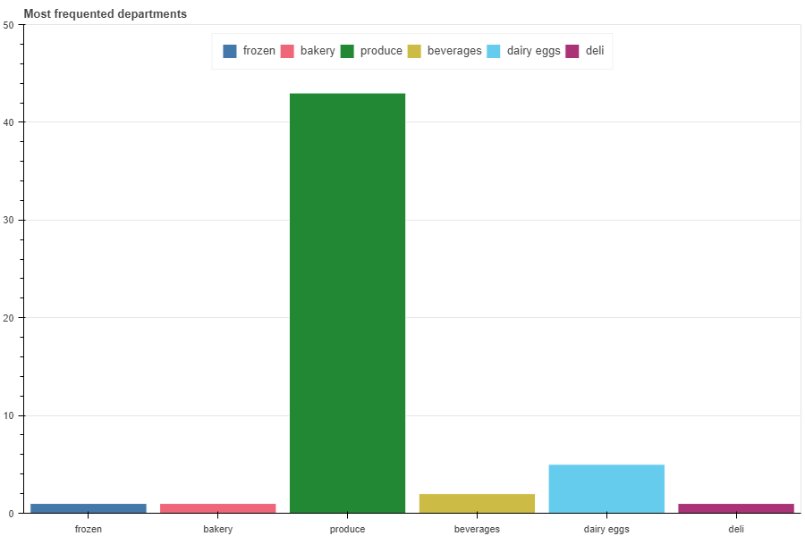

Une démonstration de ce qui saute aux yeux
Premier graph: Montre le nombre de commandes par heure
On voit qu'il y a une tranche horaire tres clairement favorisée entre 10h et 15h
Le deuxieme graphe montre les zones les plus fréquentées
A savoir les produits frais
En troisieme point, les allées les plus fréquentées
Les fruits frais
La tendence est confirmée par ce dernier graphe
Qui represente le top 6 des commandes, ou on retrouve deux fruits frais
Ceci permet de conclure que les produits les plus commandés sont des produits frais, et que la majorité des commandes se fait entre 10h et 15h.
On notera tout de même que le produit le plus commandé reste le lait en briques.
Annexe:

- JupyterLab
- Pandas
- Bokeh
- reveal.js